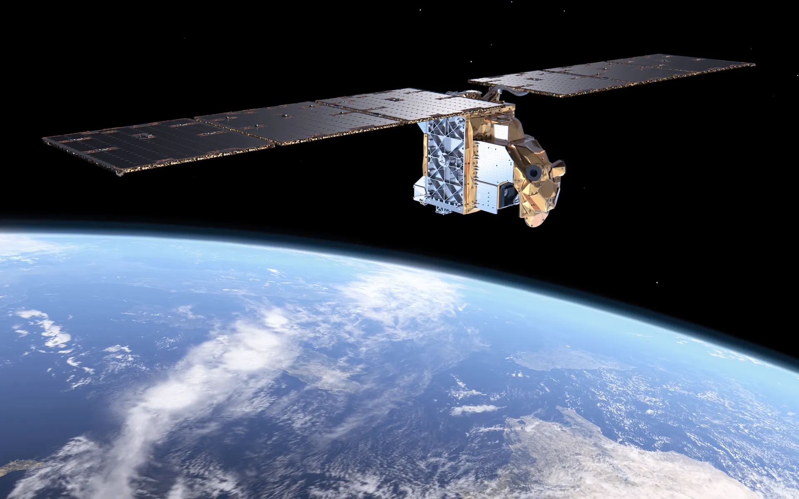

Nuages
Suivre la couverture nuageuse et son évolution.
STORMLAB • OBSERVATION SPATIALE
Depuis l'espace, les satellites permettent d'observer les nuages, les masses d'air et l'évolution des systèmes météorologiques.

VUE D'ENSEMBLE
Les observations satellitaires offrent une vision très large de l'atmosphère et permettent de suivre l'évolution de nombreux systèmes météorologiques.
01 • OBSERVATIONS
Suivre la couverture nuageuse et son évolution.
Certaines observations permettent d'étudier les températures de surface ou des sommets nuageux.
Observer les grandes structures atmosphériques à l'échelle régionale ou continentale.
Les images successives permettent de suivre les changements au fil du temps.
02 • COMPLÉMENTARITÉ
Les observations satellitaires et radar sont complémentaires. Ensemble, elles offrent une meilleure vision de la situation météorologique.
📡 Retour au radarSTORMLAB
La météo commence par l'observation.
📚 Retour au manuel